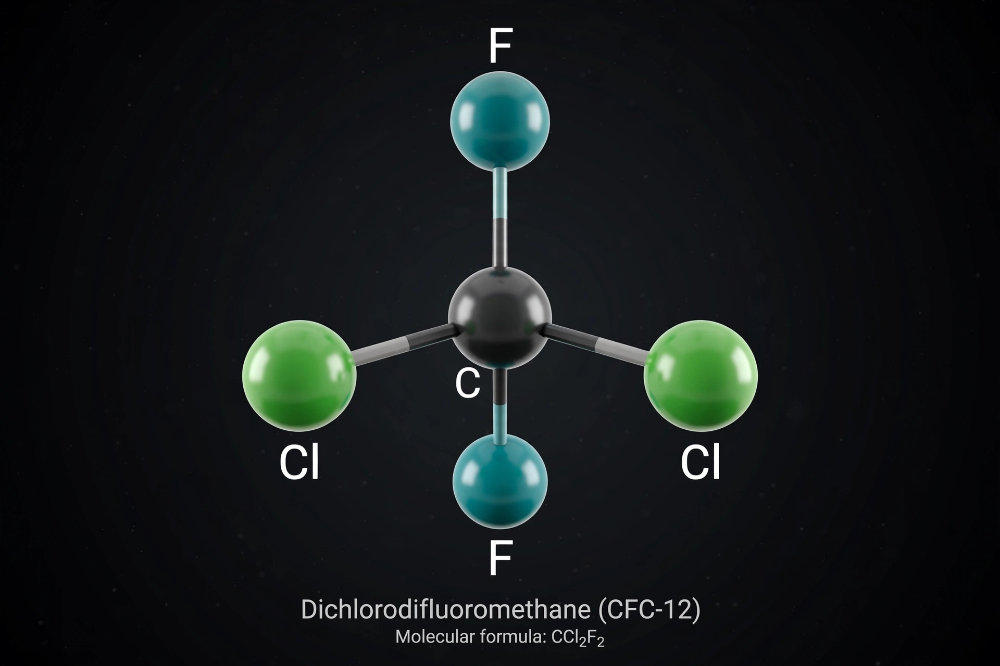

From Wikipedia, the free encyclopedia
| Chlorofluorocarbons | |
|---|---|
 CFC-12 (dichlorodifluoromethane) | |
| Composition | Carbon, chlorine and fluorine (fully halogenated paraffins) |
| Common members | CFC-11, CFC-12, CFC-113, CFC-114, CFC-115 |
| Former uses | Refrigerants, aerosol propellants, foam-blowing agents, solvents |
| Atmospheric lifetime | ~50 to over 1,000 years, depending on compound |
| Regulation | Phased out under the Montreal Protocol (1987) |
Chlorofluorocarbons (CFCs) are fully halogenated paraffin hydrocarbons containing only carbon, chlorine and fluorine. Developed in the late 1920s by Thomas Midgley Jr. and co-workers as safe, non-flammable, non-toxic refrigerants — marketed by DuPont under the name Freon — CFCs came to be used worldwide as refrigerants, aerosol propellants, foam-blowing agents and industrial solvents.
CFCs are colourless, volatile, chemically inert liquids or gases with low toxicity — properties that made them seem ideal for refrigeration and air conditioning, spray cans, and the manufacture of insulating foams. The most widely used were trichlorofluoromethane (CFC-11), dichlorodifluoromethane (CFC-12) and 1,1,2-trichlorotrifluoroethane (CFC-113). Their very stability, however, means they survive for decades to centuries in the lower atmosphere and eventually drift up into the stratosphere.
In 1974, Mario Molina and F. Sherwood Rowland predicted that in the stratosphere, hard ultraviolet radiation would break CFCs apart, releasing chlorine atoms that destroy ozone catalytically: a single chlorine atom can destroy on the order of 100,000 ozone molecules before being removed from the cycle. In 1985, scientists of the British Antarctic Survey reported the springtime Antarctic "ozone hole" — severe thinning of the ozone layer — which polar stratospheric clouds greatly accelerate. Molina, Rowland and Paul Crutzen shared the 1995 Nobel Prize in Chemistry for this work. CFCs are also powerful greenhouse gases, thousands of times more potent per molecule than carbon dioxide.
The Montreal Protocol, signed in 1987, froze and then phased out CFC production; production for most uses ended in developed countries by 1996 and worldwide by 2010, with narrow essential-use exemptions. CFCs were replaced first by hydrochlorofluorocarbons (HCFCs, also being phased out) and then by hydrofluorocarbons (HFCs) and newer hydrofluoroolefins, which do not deplete ozone. Stratospheric chlorine levels have since declined and the ozone layer is projected to recover to 1980 values around the middle of the 21st century.
See also: Ozone depletion · Montreal Protocol · Greenhouse gas